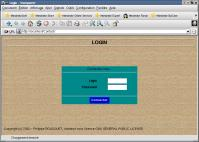
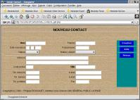
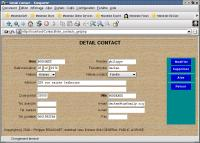
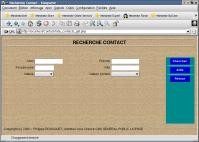
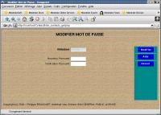
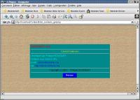
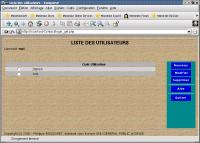
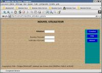

La Liste des contacts

Une fois connecté, on se débranche automatiquement sur la liste des contacts.
On peu effectuer les actions suivantes:
Présentation
Contact est un logiciel de carnet d'adresse ecrit en PHP et MySQL, sa particularité est qu'il fonctionne sur un serveur web du type Apache et peut donc etre accessible en intranet ou via internet.
Installation
Configuration Necessaire:
$ su# ./configure# ./install-it
| users | Liste des utilisateurs autorisés |
| contacts | Liste des contacts pour un utilisateur |
| Champ | Type | Null | Clé | Defaut | Extra | Definition |
|---|---|---|---|---|---|---|
| cuser | varchar(10) | PRI | Code utilisateur | |||
| passwd | varchar(10) | YES | NULL | Mot de passe |
| Champ | Type | Null | Clé | Defaut | Extra | Definition |
|---|---|---|---|---|---|---|
| ident | mediumint(9) | PRI | auto_increment | Identifiant contact | ||
| cuser | varchar(10) | PRI | Code utilisateur | |||
| nom | varchar(25) | Nom de la parsonne | ||||
| prenom | varchar(25) | YES | NULL | Prenom de la personne | ||
| dnaiss | date | YES | NULL | Date de naissance | ||
| pseudo | varchar(15) | YES | NULL | Pseudonyme de la personne | ||
| nature | char(1) | YES | NULL | Nature de la personne | ||
| type | char(1) | YES | NULL | Type de contact | ||
| adresse1 | varchar(128) | YES | NULL | Premiere ligne d'adresse | ||
| adresse2 | varchar(128) | YES | NULL | Deuxieme ligne d'adresse | ||
| cdpost | varchar(5) | YES | NULL | Code postal | ||
| ville | varchar(15) | Ville | ||||
| teldom | varchar(10) | YES | NULL | Telephone personnel | ||
| empers | varchar(255) | YES | NULL | E-mail personnel | ||
| telbur | varchar(10) | YES | NULL | Telephone professionnel | ||
| emprof | varchar(255) | YES | NULL | E-mail professionnel | ||
| telpor | varchar(10) | YES | NULL | Telephone Portable | ||
| fax | varchar(10) | YES | NULL | Numero de Fax |
Se connecter à Contact

La premiere chose a faire est de se signer, il suffit d'entrer son code utilisateur et son mot de passe qui est stocké dans la table users.
L'administrateur permet d'ajouter ou supprimer des utilisateur. Pour se connecter en tant qu'administrateur il faut entrer le code utilisateur root ainsi que son mot de passe lui aussi stocké dans la table users.
La Liste des contacts
Une fois connecté, on se débranche automatiquement sur la liste des contacts.
On peu effectuer les actions suivantes:
Créer un contact

Lorsque vous désirez créer un nouveau contact il est nécessaire de saisir au minimum deux champs à savoir le Nom et la Ville du contact.
Brève description des champs:
Detail d'un contact

Cette page permet d'obtenir l'ensemble des informations a propos d'un contact en vue de les modifier, de supprimer le contact, ou tout simplement de les visualiser
On peu effectuer les actions suivantes:
Chercher un contact

Cette page permet de selectionner certains criteres afin d'afficher une liste plus restreinte de contacts
Critères de recherche:
Modifier son mot de passe

Cette page permet de changer son mot de passe
Brève description des champs:
La boite A Propos

Cette page affiche la boite A Propos: Elle donne differentes infos comme le numero de version de Contact
On peu effectuer les actions suivantes:
Gestion des Utilisateurs

Lorsque l'on se connecte en tant qu'administrateur (user: root) on se débranche sur cette page qui permet la gestion des utilisateurs de Contact
On peu effectuer les actions suivantes:
Creer un nouvel Utilisateur

Cette page permet de creer un nouveau compte utilisateur. L'utilisateur pourra alors creer et gerer ses contact via le logiciel
Brève description des champs:
Modifier le mot de passe d'un utilisateur
Cette page permet de changer le mot de passe d'un utilisateur, ceci est utile si celui ci à oublié son mot de passe
Brève description des champs:
Ou trouver Contact ?
Contact va surement évoluer et donc si vous voulez récupérer les nouvelles versions ou tous simplement vous tenir informé sur le Projet.
Ce projet est hébergé sur mon site WEB (http://darken.tuxfamily.org) à l'adresse suivante : http://darken.tuxfamily.org/pages/contact.html.
Copyright & Licence
Licence
Contact est sous licence GPL (GNU GENERAL PUBLIC LICENSE). Pour plus d'information veuillez vous reporter au fichier COPYING fourni avec l'archive XWine-x.x.tar.gz.
Auteur
Philippe BOUSQUET
Adresse: 229 rue Sainte Catherine, 33000 BORDEAUX.
Tel: 06.61.99.25.84
e-mail: Darken@tuxfamily.org
site: http://darken.tuxfamily.org
Créé le 15/01/2002 par Philippe BOUSQUET